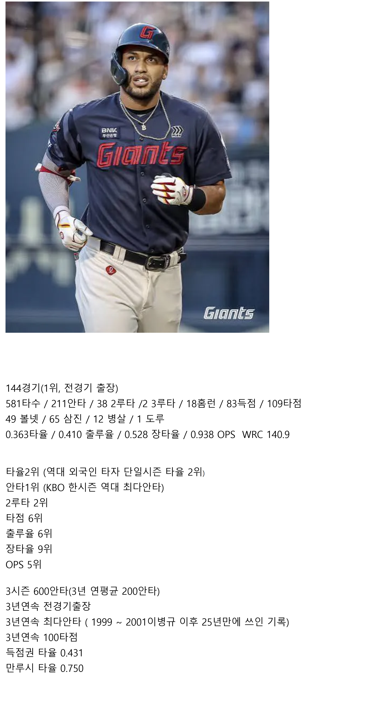

3년연속 전경기 출장??

3년연속 전경기 출장??
최다안타 레이예스
최다도루 황성빈
둘 다 있는데 가을야구 못가는 클라쓰 ㅋㅋ
1루수 최다 실책 나승엽...

저렇게해도 팀을 못살려
신생구단들은 비교적 최근에 우승 한번씩 하거나 한국시리즈라도 갔는데 원년팀이란게 92년도 이후로 우승이 없음ㅋ 걍 역사속으로 사라져라 추한꼴 그만보이고
롯데랑 키움은 해체해야지
ㄹㅇ 뭐 신생구단 늘어나면 리그의 질이 떨어지네 어쩌네 하더만 정작 질떨어지는 야구하는건 개좆데임
타율이 왜 2윈가 했는데
2위할만했네
와 이런 타자가 있는 롯데는 이번 시즌 우승했겠지?
롯데 레이 예에에스~
빅터 레이예에스 임ㅋㅋ
이런 타자를 갖고도 가을야구를 못가는 팀이 있다고?
야 무슨 중국 야구 리그같은 소릴 하고 자빠졌어 ㅋㅋㅋㅋㅋㅋ
그리고 무려 도루왕도 있는 팀임 ㅅㅂ ㅋㅋㅋㅋ
용병혼자 야구하노? ㅋㅋㅋ
아니 진짜 미친 기록인 건 3년 뛰어서 600안타라는 거임. 이번 안타 2위가 최원준인데 208안타인가? 근데 얘도 3년 기록 보면 430안타인가 밖에 안됨. 3년 기록 500안타 친 애도 없음. 이전 롯데 주전 유격수 문규현은 15년 뛰어서 600안타 침.....
참고로 레이에스 이전 최다 안타 기록은 서건창의 201안타임. 그걸 레이예스가 갱신하고 올해 또 갱신함
내년 롯데는 일단 수비만 어떻게 해주면 그나마 가을야구 가능 할 거 같긴 한데... 이게 됬으면 진작에 가을야구 갔을 거 같기도 하고.... 한동희 레이예스가 상수 잡아주면 좀 낫지 않을 까 싶기도 한데 이런 if 터지면 다들 우승 했겠지
내 머리털나고 롯데가 수비를 잘한적이 없다.. 괜히 번즈 마차도 사다쓴게 아녀 ㅋㅋ
우승후보팀 타자인가요?
헿헿ㅎ헿헿 올해 울 빠삐 사인 막차 성공함